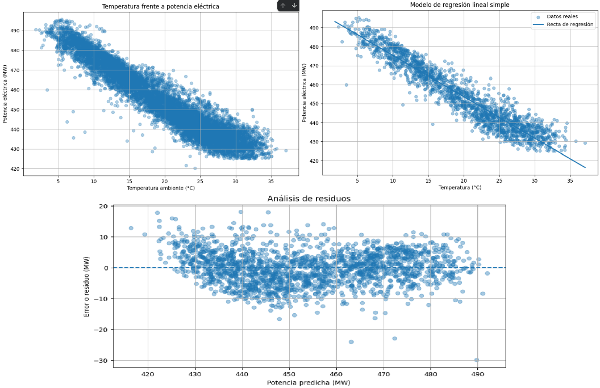

Potencia de una central según la temperatura
Predecir la potencia que genera una central eléctrica a partir de una sola variable: la temperatura ambiente.
⏱ ≈ 30 min · 10 pasos · Python, pandas, matplotlib, scikit-learn, statsmodels
Al terminar este proyecto sabrás:
Ficha técnica
- Nivel
- Básico
- Área
- Energía
- Tipo de problema
- Regresión
- Técnica
- Regresión lineal simple
- Dataset
- Central eléctrica de ciclo combinado (UCI) · enlace oficial ↗
- Objetivo
- Aprender qué es una regresión lineal simple: ajustar una recta a datos reales, interpretarla y medir cuánto se equivoca.
- Datos usados
- Medias horarias de una central eléctrica de ciclo combinado real, durante varios años (unos 9.500 registros): temperatura ambiente, presión, humedad, vacío del escape y potencia eléctrica neta. Aquí usamos solo la temperatura (entrada) y la potencia (salida).
- Herramientas
- Python pandas matplotlib scikit-learn statsmodels
- Método
- Una recta y = a·x + b ajustada con los datos de entrenamiento y evaluada con datos que el modelo no ha visto.
- Métrica
- R² (cuánta variación explica la recta), RMSE y MAE (error medio en MW).
Métrica y pasos del proyectoexplicados desde cero
Medimos el resultado con: R² (cuánta variación explica la recta), RMSE y MAE (error medio en MW).
0 de 10 pasos completados (se guarda en este navegador)
Tu recorrido: una red neuronal que se ilumina
Cada nodo es un paso. Al marcarlo como completado se enciende en verde y se conecta con el siguiente. Pulsa un nodo para ir a él.
Entender qué es una regresión lineal simple✓ completado
Qué hacemos: Saber qué vamos a calcular.
Cómo: Buscamos una recta: potencia = pendiente × temperatura + ordenada. La pendiente dice cuántos MW cambia la potencia por cada grado; la ordenada es el punto de partida.
Por qué: Es el modelo más sencillo que existe: si una recta basta, no hace falta nada más complicado.
Para qué: Tener claro qué significan los dos números que saldrán al final.
Abrir el paso: ayuda del libro, test y entrega →Descargar y abrir los datos✓ completado
Qué hacemos: Traer el fichero a tu ordenador y cargarlo.
Cómo: Descárgalo desde la página de la UCI. Es un fichero de Excel; con pandas se lee con read_excel. Comprueba cuántas filas y columnas tiene.
Por qué: Antes de analizar nada hay que saber con qué se trabaja.
Para qué: Tener la tabla en Python, lista para usar.
Abrir el paso: explicación, código, resultado y test →Revisar la tabla✓ completado
Qué hacemos: Mirar nombres, rangos y huecos.
Cómo: Con describe() se ven mínimos, máximos y medias de cada columna; con isna().sum() se comprueba que no faltan datos.
Por qué: Los datos reales pueden traer errores o vacíos que estropean el resultado sin avisar.
Para qué: Asegurarte de que los números tienen sentido.
Abrir el paso: explicación, código, resultado y test →Dibujar el diagrama de dispersión✓ completado
Qué hacemos: Poner la temperatura en el eje horizontal y la potencia en el vertical.
Cómo: Con matplotlib, un punto por registro. Se mira si la nube de puntos sigue una línea.
Por qué: Si no se ve una tendencia más o menos recta, la regresión lineal no es el modelo adecuado.
Para qué: Decidir con los ojos si merece la pena seguir.
Abrir el paso: explicación, código, resultado y test →Separar entrenamiento y prueba✓ completado
Qué hacemos: Guardar una parte de los datos sin tocarla.
Cómo: Con train_test_split de scikit-learn: 80 % para entrenar y 20 % para probar, fijando una semilla para poder repetirlo.
Por qué: Si evaluamos con los mismos datos con los que aprendió, el resultado sale mejor de lo que es.
Para qué: Medir el modelo con datos que no ha visto, como en la vida real.
Abrir el paso: explicación, código, resultado y test →Ajustar la recta✓ completado
Qué hacemos: Calcular la pendiente y la ordenada.
Cómo: Con LinearRegression de scikit-learn y fit() sobre los datos de entrenamiento. Después se leen coef_ e intercept_.
Por qué: El ordenador elige la recta que minimiza el error cuadrático con todos los puntos.
Para qué: Obtener la fórmula y poder leerla: cuántos MW se pierden por cada grado.
Abrir el paso: explicación, código, resultado y test →Evaluar con datos nuevos✓ completado
Qué hacemos: Medir el error sobre el 20 % reservado.
Cómo: Se predice con predict() y se calculan R², RMSE y MAE. El RMSE y el MAE se leen en MW.
Por qué: Un número en las unidades reales se entiende: «me equivoco, de media, en tantos MW».
Para qué: Saber cuánto te puedes fiar de la recta.
Abrir el paso: explicación, código, resultado y test →Mirar los errores y poner límites✓ completado
Qué hacemos: Dibujar los residuos y escribir qué no explica el modelo.
Cómo: Se resta el valor real al predicho y se dibuja. Si queda una forma, algo falta en el modelo. Se anotan los límites: una sola variable, una sola central, correlación no es causalidad.
Por qué: Un resultado sin sus límites engaña, aunque sea sin querer.
Para qué: Dejar el proyecto honesto y preparar el siguiente: añadir más variables.
Abrir el paso: explicación, código, resultado y test →Poner un rango a la predicción✓ completado
Qué hacemos: Dar un margen y no solo un número.
Cómo: Con statsmodels se calcula el intervalo de predicción de la recta (get_prediction) para una temperatura concreta, y se comprueba qué porcentaje de los datos de prueba cae dentro del margen.
Por qué: Un número suelto parece más exacto de lo que es; un rango dice cuánto fiarse.
Para qué: Poder decir «a esta temperatura la central dará entre tantos y tantos MW».
Abrir el paso: explicación, código, resultado y test →Contar el resultado en cinco frases✓ completado
Qué hacemos: Explicar el proyecto a otra persona.
Cómo: Cinco frases: la pregunta, los datos (cuántas filas y de dónde), el resultado (la recta con sus unidades y el R²), las limitaciones y la conclusión.
Por qué: Un análisis que no se sabe contar no sirve a nadie.
Para qué: Dejar el proyecto listo para publicar en esta web.
Abrir el paso: explicación, código, resultado y test →
Resultados
Las gráficas que genera el código del proyecto

1 · Nube de puntos
2 · Recta de regresión
3 · Análisis de residuos
La recta ajustada es potencia = −2,177 × temperatura + 497,15. Por cada grado más de temperatura, la central pierde unos 2,2 MW. Con datos de prueba (que el modelo no vio): R² = 0,90 (la recta explica el 90 % de la variación), RMSE = 5,38 MW y MAE = 4,28 MW. A 25 °C predice 442,7 MW, con un rango del 95 % de 432,1 a 453,4 MW.
Limitaciones
Usa una sola variable: la presión, la humedad y el vacío del escape también influyen y la recta no los ve. Los datos van de 1,8 a 37,1 °C: fuera de ese rango la predicción es una extrapolación sin garantías. Los errores crecen un poco en los extremos y hay valores atípicos aislados (hasta 30 MW de error).
Código
¿Has encontrado un error o tienes una mejora? Será bienvenida.